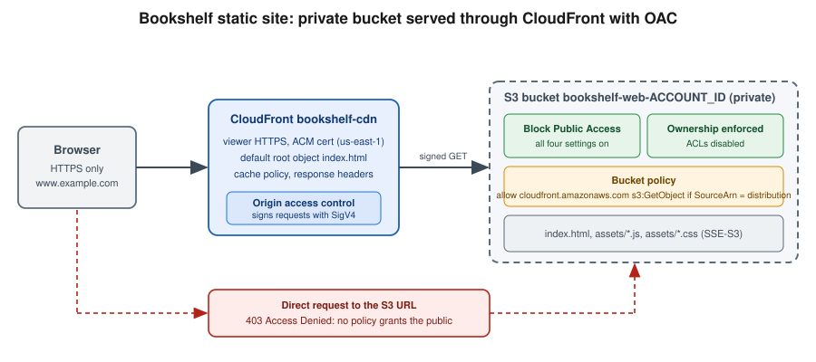

S3 Security and Static Hosting
|
This content was generated with the assistance of AI and should be verified against the official documentation before being relied on in production. |
Commands and behaviour below are current for AWS CLI v2 (2.37 line) and AWS SDK for Java 2.x (checked 2026-10-01).
S3 changed its defaults several times in 2023 and 2026 (Block Public Access on, ACLs disabled, SSE-S3 default
encryption, SSE-C disabled for new buckets), so older guides and tutorials that build a "public bucket" website no
longer work on a new bucket. Verify flags with aws s3api help, aws s3control help and the linked reference pages.
This page is the security half of Amazon S3. The basics — buckets, keys, storage classes, lifecycle, versioning,
replication and multipart uploads — are in S3 Object Storage, and the CDN that fronts the
static site is in CloudFront and CDN Delivery. Two Bookshelf buckets are used throughout:
bookshelf-web-<account-id> (the single page application, private, served only through CloudFront) and
bookshelf-uploads-<account-id> (user uploads written by catalog-api and read back through presigned URLs). The
Azure counterpart is Blob Storage; the Spring Boot side of file storage is in
File Storage & Object Stores; the React build and the S3 plus CloudFront example it
deploys are in Build and Deployment.

The secure-by-default baseline
A bucket created today is private and has no exceptions to configure. These defaults apply to every new general purpose bucket, and you should keep them rather than turn them off:
| Control | Default for new buckets | Since |
|---|---|---|
Block Public Access (BPA) |
All four settings on: |
April 2023 |
Object Ownership |
Bucket owner enforced: ACLs are disabled and the bucket owner owns every object |
April 2023 |
Default encryption |
SSE-S3 (AES-256) on every new object, at no extra charge |
January 2023 |
SSE-C (customer-provided keys) |
Disabled for new general purpose buckets, and for existing buckets that have never received SSE-C writes |
April 2026 (rolling out across Regions) |
Transport |
HTTPS and HTTP are both accepted unless a policy denies HTTP |
Not changed; enforce with a bucket policy (below) |
Older tutorials for "static website hosting" tell you to turn off BPA and attach a bucket policy with
"Principal": "". Today that fails on a new bucket for three independent reasons: BPA rejects the public policy
(BlockPublicPolicy), BPA would ignore it anyway (RestrictPublicBuckets), and many organizations enforce BPA at the
account or Organizations level, which overrides a bucket’s own setting. Older guides also grant access with object
ACLs (--acl public-read), which fails with AccessControlListNotSupported once ACLs are disabled. The current
approach is a *private bucket that CloudFront reads with Origin Access Control (OAC), described in
CloudFront and OAC.
Block Public Access settings can be set at four levels — the organization (an Organizations S3 policy), the account, the bucket and the access point — and S3 applies the most restrictive combination. Setting all four at account level is the recommended guard rail, because a user who can edit a bucket policy could otherwise disable the bucket-level settings.
In the AWS Management Console
-
Choose the Region in the navigation bar (
us-east-1is a placeholder) and open S3. -
For the account guard rail, choose Block Public Access settings for this account in the left navigation → Edit → select Block all public access → Save changes and confirm.
-
To create the Bookshelf bucket, choose General purpose buckets → Create bucket, enter the name
bookshelf-web-<account-id>(names are global within the partition; the opt-in account regional namespace avoids collisions, see S3 Object Storage). -
Leave Object Ownership on ACLs disabled (recommended) and Block all public access checked.
-
Leave Default encryption on Server-side encryption with Amazon S3 managed keys (SSE-S3) (choose SSE-KMS in the next section if you need key-level audit and control), then choose Create bucket.
With the AWS CLI
export AWS_REGION=us-east-1
export ACCOUNT_ID=$(aws sts get-caller-identity --query Account --output text)
export WEB_BUCKET=bookshelf-web-$ACCOUNT_ID
export UPLOADS_BUCKET=bookshelf-uploads-$ACCOUNT_ID
# Account-wide guard rail (applies to every bucket, in every Region)
aws s3control put-public-access-block \
--account-id $ACCOUNT_ID \
--public-access-block-configuration \
BlockPublicAcls=true,IgnorePublicAcls=true,BlockPublicPolicy=true,RestrictPublicBuckets=true
# Buckets (outside us-east-1 add --create-bucket-configuration LocationConstraint=$AWS_REGION)
for b in $WEB_BUCKET $UPLOADS_BUCKET; do
aws s3api create-bucket --bucket $b --region $AWS_REGION
aws s3api put-public-access-block --bucket $b \
--public-access-block-configuration \
BlockPublicAcls=true,IgnorePublicAcls=true,BlockPublicPolicy=true,RestrictPublicBuckets=true
aws s3api put-bucket-ownership-controls --bucket $b \
--ownership-controls 'Rules=[{ObjectOwnership=BucketOwnerEnforced}]'
done
# Verify
aws s3api get-public-access-block --bucket $WEB_BUCKET
aws s3api get-bucket-ownership-controls --bucket $WEB_BUCKET
aws s3api get-bucket-policy-status --bucket $WEB_BUCKET # NoSuchBucketPolicy until you add oneDerived from aws s3control put-public-access-block, aws s3api put-public-access-block and aws s3api put-bucket-ownership-controls.
The same baseline in CloudFormation, which is what the Bookshelf baseline template should contain:
BookshelfWebBucket:
Type: AWS::S3::Bucket
Properties:
BucketName: !Sub bookshelf-web-${AWS::AccountId}
PublicAccessBlockConfiguration:
BlockPublicAcls: true
IgnorePublicAcls: true
BlockPublicPolicy: true
RestrictPublicBuckets: true
OwnershipControls:
Rules:
- ObjectOwnership: BucketOwnerEnforced
BucketEncryption:
ServerSideEncryptionConfiguration:
- ServerSideEncryptionByDefault:
SSEAlgorithm: AES256Derived from the AWS::S3::Bucket reference.
How S3 decides a request: authorization
An S3 request is allowed only if nothing denies it and at least one policy allows it. For a request inside the bucket
owner’s account, an identity-based policy or the bucket policy is enough; for a request from another account, both
the caller’s identity policy and the bucket policy must allow it. Block Public Access and any explicit Deny (in an
SCP, permissions boundary, bucket policy, VPC endpoint policy or access point policy) win over every allow. Because
ACLs are disabled, they are not part of the decision on a modern bucket. If the object is encrypted with SSE-KMS the
caller also needs permission on the KMS key. The general policy evaluation rules are in
Identity and Access.
blocks it?"} B -- Yes --> X["403 Access Denied"] B -- No --> C{"Explicit deny in any policy?
SCP, boundary, bucket policy,
endpoint policy, access point policy"} C -- Yes --> X C -- No --> D{"Same account as bucket owner?"} D -- Yes --> E{"Identity policy OR
bucket policy allows?"} D -- No --> F{"Identity policy AND
bucket policy allow?"} E -- No --> X F -- No --> X E -- Yes --> G{"Object uses SSE-KMS?"} F -- Yes --> G G -- No --> OK["Request succeeds"] G -- Yes --> H{"Caller allowed to use
the KMS key?"} H -- Yes --> OK H -- No --> X
Access control with policies
Identity policy for the application
catalog-api runs as an ECS task (see ECS and Fargate) and reaches the uploads bucket through
its task role, never through long-lived access keys. Grant the minimum: object read and write under one prefix,
listing restricted to that prefix, and the KMS permissions only if the bucket uses SSE-KMS. Replace the placeholder
account ID and key ID with your own.
{
"Version": "2012-10-17",
"Statement": [
{
"Sid": "ObjectsUnderUploadsPrefix",
"Effect": "Allow",
"Action": ["s3:GetObject", "s3:PutObject", "s3:AbortMultipartUpload"],
"Resource": "arn:aws:s3:::bookshelf-uploads-111122223333/uploads/*"
},
{
"Sid": "ListOnlyUnderUploadsPrefix",
"Effect": "Allow",
"Action": "s3:ListBucket",
"Resource": "arn:aws:s3:::bookshelf-uploads-111122223333",
"Condition": { "StringLike": { "s3:prefix": ["uploads/*"] } }
},
{
"Sid": "UseUploadsKey",
"Effect": "Allow",
"Action": ["kms:GenerateDataKey", "kms:Decrypt"],
"Resource": "arn:aws:kms:us-east-1:111122223333:key/11111111-2222-3333-4444-555555555555",
"Condition": { "StringEquals": { "kms:ViaService": "s3.us-east-1.amazonaws.com" } }
}
]
}Derived from the Amazon S3 User Guide — How Amazon S3 works with IAM and the Service Authorization Reference for Amazon S3.
A second, separate policy belongs to the CI role that publishes the site (for example the GitHub Actions role in Container Registry): write to the web bucket and invalidate the distribution, nothing else.
{
"Version": "2012-10-17",
"Statement": [
{
"Effect": "Allow",
"Action": ["s3:PutObject", "s3:DeleteObject"],
"Resource": "arn:aws:s3:::bookshelf-web-111122223333/*"
},
{
"Effect": "Allow",
"Action": "s3:ListBucket",
"Resource": "arn:aws:s3:::bookshelf-web-111122223333"
},
{
"Effect": "Allow",
"Action": "cloudfront:CreateInvalidation",
"Resource": "arn:aws:cloudfront::111122223333:distribution/EDFDVBD6EXAMPLE"
}
]
}Bucket policies
A bucket policy is a resource policy attached to the bucket; it is the place for rules that must hold no matter which identity calls. It is limited to 20 KB, so prefer a few broad statements to many narrow ones. Three statements are worth putting on every bucket.
Enforce TLS. The deny applies to every principal, including the bucket owner, and also rejects TLS versions older than 1.2:
{
"Version": "2012-10-17",
"Statement": [
{
"Sid": "DenyInsecureTransport",
"Effect": "Deny",
"Principal": "*",
"Action": "s3:*",
"Resource": [
"arn:aws:s3:::bookshelf-uploads-111122223333",
"arn:aws:s3:::bookshelf-uploads-111122223333/*"
],
"Condition": { "Bool": { "aws:SecureTransport": "false" } }
},
{
"Sid": "DenyOldTls",
"Effect": "Deny",
"Principal": "*",
"Action": "s3:*",
"Resource": [
"arn:aws:s3:::bookshelf-uploads-111122223333",
"arn:aws:s3:::bookshelf-uploads-111122223333/*"
],
"Condition": { "NumericLessThan": { "s3:TlsVersion": "1.2" } }
}
]
}Restrict to a VPC endpoint. Use it for a bucket that only workloads in your VPC may touch (see Network access: gateway VPC endpoints). Exempt an administrative role, or you can lock yourself out of the bucket policy; the root user can always remove a bad policy.
{
"Version": "2012-10-17",
"Statement": [
{
"Sid": "DenyUnlessFromBookshelfVpcEndpoint",
"Effect": "Deny",
"Principal": "*",
"Action": "s3:*",
"Resource": [
"arn:aws:s3:::bookshelf-uploads-111122223333",
"arn:aws:s3:::bookshelf-uploads-111122223333/*"
],
"Condition": {
"StringNotEquals": {
"aws:SourceVpce": "vpce-0a1b2c3d4e5f67890",
"aws:PrincipalArn": "arn:aws:iam::111122223333:role/bookshelf-admin"
}
}
}
]
}Restrict to an organization. Allow reads from any principal in your AWS Organization without listing account IDs.
aws:PrincipalOrgID is a fixed value, so Block Public Access does not treat the policy as public:
{
"Version": "2012-10-17",
"Statement": [
{
"Sid": "AllowOrganizationRead",
"Effect": "Allow",
"Principal": "*",
"Action": ["s3:GetObject", "s3:ListBucket"],
"Resource": [
"arn:aws:s3:::bookshelf-uploads-111122223333",
"arn:aws:s3:::bookshelf-uploads-111122223333/*"
],
"Condition": { "StringEquals": { "aws:PrincipalOrgID": "o-exampleorgid" } }
}
]
}Derived from the
Amazon S3 User Guide — Bucket
policy examples and
S3 Signature Version 4
condition keys. A policy is applied as a whole document (statements from the three examples are merged into one
Statement array in practice):
aws s3api put-bucket-policy --bucket $UPLOADS_BUCKET --policy file://uploads-bucket-policy.json
aws s3api get-bucket-policy-status --bucket $UPLOADS_BUCKET --query PolicyStatus.IsPublicDerived from aws s3api put-bucket-policy.
In the AWS Management Console
-
Open the bucket → Permissions tab → Bucket policy → Edit.
-
Paste the JSON, choose Preview external access (IAM Access Analyzer validates the policy), then Save changes.
-
Under Block public access (bucket settings), confirm that all four settings still show On; the page also shows the Access Analyzer for S3 findings for the bucket.
IAM Access Analyzer for S3
IAM Access Analyzer for S3 lists buckets (and access points) whose ACLs or policies grant access to the public or to
other accounts, with the source of each grant, and offers Block all public access in one click. Enable an account
or organization analyzer once (aws accessanalyzer create-analyzer --analyzer-name bookshelf --type ACCOUNT) and
review findings from the S3 console or the IAM console. It complements, not replaces, the BPA guard rail; see
Identity and Access for Access Analyzer in general.
ACLs are disabled
Access control lists are a legacy mechanism that predates IAM. With Object Ownership set to bucket owner enforced
(the default for new buckets), ACLs are no longer evaluated, the bucket owner owns every object even when another
account uploads it, and PutObjectAcl calls fail. Keep it that way. Re-enable ACLs (Bucket owner preferred or
Object writer) only for a legacy integration that cannot work without them, such as a log delivery destination
or an old partner uploader, and prefer replacing that integration.
Migrating an existing bucket to bucket owner enforced is safe once no request depends on an ACL. Check the AclRequired
field in the S3 server access logs or CloudTrail data events (it shows Yes for requests that needed an ACL), copy the
ACL grants into a bucket policy, and then switch with aws s3api put-bucket-ownership-controls.
Encryption at rest
Every S3 object is encrypted at rest; the choice is who holds the key and how much you can see and control.
| Mode | Who manages the key | Use it when |
|---|---|---|
SSE-S3 ( |
S3 manages keys; no extra charge, no key policy, no per-request audit of key use |
The default and the right choice for the public static web bucket and for most non-sensitive data |
SSE-KMS ( |
An AWS managed key ( |
You need key-level access control, audit, cross-account control or the ability to revoke access by disabling the key |
DSSE-KMS ( |
Two independent layers of encryption with KMS keys |
A compliance requirement explicitly asks for dual-layer encryption |
SSE-C |
You send the key with every request; S3 does not store it |
Avoid. Disabled by default on new buckets since April 2026; client-side encryption is the alternative |
SSE-KMS adds one KMS request per object operation, which costs money and can hit KMS request quotas on high-throughput buckets. S3 Bucket Keys cut that load by letting S3 derive per-object data keys from a short-lived bucket-level key, which reduces KMS request traffic substantially; turn them on whenever you use SSE-KMS as the bucket default. Callers (the task role above, CloudFront through OAC, replication and Lambda triggers) all need permission on the KMS key. KMS key types, key policies and rotation are covered in Secrets Manager, Parameter Store and KMS.
In the AWS Management Console
-
Open the bucket → Properties → Default encryption → Edit.
-
Choose Server-side encryption with AWS Key Management Service keys (SSE-KMS) (or Dual-layer … (DSSE-KMS)).
-
Select Choose from your AWS KMS keys and pick the key, or enter its ARN.
-
Set Bucket Key to Enable and choose Save changes.
With the AWS CLI
export KMS_KEY_ARN=arn:aws:kms:$AWS_REGION:$ACCOUNT_ID:key/11111111-2222-3333-4444-555555555555
aws s3api put-bucket-encryption --bucket $UPLOADS_BUCKET \
--server-side-encryption-configuration '{
"Rules": [{
"ApplyServerSideEncryptionByDefault": {
"SSEAlgorithm": "aws:kms",
"KMSMasterKeyID": "'$KMS_KEY_ARN'"
},
"BucketKeyEnabled": true
}]
}'
aws s3api get-bucket-encryption --bucket $UPLOADS_BUCKET
# Per-object override at upload time
aws s3 cp cover.png s3://$UPLOADS_BUCKET/uploads/cover.png \
--sse aws:kms --sse-kms-key-id $KMS_KEY_ARNDerived from
aws s3api put-bucket-encryption
and the
Amazon S3 User Guide — Reducing the cost of
SSE-KMS with Amazon S3 Bucket Keys. For DSSE-KMS set SSEAlgorithm to aws:kms:dsse. To insist that every upload
uses SSE-KMS, add a bucket-policy Deny on s3:PutObject with the condition StringNotEqualsIfExists on
s3:x-amz-server-side-encryption equal to aws:kms (the IfExists operator lets requests that omit the header and
rely on the bucket default succeed).
Presigned URLs
A presigned URL gives time-limited access to one object operation without giving the holder AWS credentials: the URL
embeds a SigV4 signature made with the credentials of whoever generated it, and works only for the HTTP method, bucket,
key and signed headers it was created for. It is a bearer token, so treat it like a password. Bookshelf uses it so a
browser can upload a cover image directly to S3 instead of streaming it through catalog-api.
Limits to remember:
-
Maximum lifetime. Up to 7 days with SigV4 and IAM user credentials. From the console, 1 minute to 12 hours.
-
Credentials bound the lifetime. A URL signed with temporary credentials (task role, Lambda role,
assume-role, Identity Center) stops working when those credentials expire, even if the requested expiry is longer. On ECS and EC2 roles that is typically hours; withAssumeRoleit can be as short as the 1-hour default session. Production code should use short expiries (minutes) anyway. -
Permissions are checked at use time. The URL works only while the signer is still allowed to perform the action and while no policy denies it (including a VPC endpoint or
aws:SourceIprestriction). -
Presigned PUT versus POST. A presigned PUT cannot cap the object size. To enforce a maximum size or a key prefix server-side, use a presigned POST (browser form upload with a signed policy document; the AWS SDK for Python
generate_presigned_postand the JavaScript SDKcreatePresignedPostsupport it, the Java SDK v2 does not have an equivalent helper). You can also add thes3:signatureAgecondition to a bucket policy to reject old signatures.
In the AWS Management Console
-
Open the bucket, select an object, and choose Object actions → Share with a presigned URL.
-
Choose the time interval (1 minute to 12 hours) and Create presigned URL; the URL is copied to the clipboard. Console URLs use the credentials of your signed-in session.
With the AWS CLI
# Download link valid for 10 minutes
aws s3 presign s3://$UPLOADS_BUCKET/uploads/cover.png --expires-in 600Derived from aws s3 presign; the command signs
downloads (GET) only, so presign uploads with an SDK.
In Java
package com.example.bookshelf.covers;
import java.time.Duration;
import software.amazon.awssdk.services.s3.model.PutObjectRequest;
import software.amazon.awssdk.services.s3.presigner.S3Presigner;
import software.amazon.awssdk.services.s3.presigner.model.PutObjectPresignRequest;
public class CoverUploadSigner {
private final S3Presigner presigner; // credentials from the default provider chain (task role)
private final String bucket;
public CoverUploadSigner(S3Presigner presigner, String bucket) {
this.presigner = presigner;
this.bucket = bucket;
}
public String presignUpload(String key, String contentType) {
PutObjectRequest put = PutObjectRequest.builder()
.bucket(bucket)
.key(key)
.contentType(contentType) // the client must send the same Content-Type
.build();
PutObjectPresignRequest request = PutObjectPresignRequest.builder()
.signatureDuration(Duration.ofMinutes(5))
.putObjectRequest(put)
.build();
return presigner.presignPutObject(request).url().toString();
}
}Derived from the
Amazon S3 User
Guide — presigned URL examples and the
S3Presigner
API reference. Create the S3Presigner once as a Spring bean with S3Presigner.create(), which uses the default
credential chain and Region; do not hard-code keys.
Object Lock
Object Lock gives write-once-read-many (WORM) protection to object versions, for regulatory retention or protection from ransomware and accidental deletion. It requires versioning (enabling Object Lock on a bucket turns versioning on, and a bucket with Object Lock cannot have versioning suspended) and applies to individual object versions.
| Setting | Behaviour |
|---|---|
Governance mode |
Users cannot overwrite or delete the locked version or shorten its retention unless they hold |
Compliance mode |
Nobody, including the root user, can delete the version or shorten retention until it expires. Use it only when a regulation requires it; you cannot undo it. |
Legal hold |
An on/off flag with no expiry that prevents deletion until someone with |
Default retention |
A bucket-level mode and period (days or years) applied to every new object version that has no explicit retention. |
In the AWS Management Console
-
When creating the bucket, expand Advanced settings and choose Enable under Object Lock, acknowledging that versioning is enabled. For an existing bucket open Properties → Object Lock → Edit (versioning must be on).
-
Under Properties → Object Lock → Default retention, choose Enable, select Governance or Compliance, set the period and save.
-
For one object: select it → Properties → Object Lock legal hold or Object Lock retention → Edit.
With the AWS CLI
export AUDIT_BUCKET=bookshelf-audit-$ACCOUNT_ID
aws s3api create-bucket --bucket $AUDIT_BUCKET --region $AWS_REGION \
--object-lock-enabled-for-bucket
aws s3api put-object-lock-configuration --bucket $AUDIT_BUCKET \
--object-lock-configuration '{
"ObjectLockEnabled": "Enabled",
"Rule": { "DefaultRetention": { "Mode": "GOVERNANCE", "Days": 30 } }
}'
aws s3api put-object-legal-hold --bucket $AUDIT_BUCKET --key orders/2026-10.csv \
--legal-hold Status=ONDerived from the Amazon S3 User Guide — Locking objects with Object Lock and aws s3api put-object-lock-configuration. Lifecycle rules and replication interact with Object Lock (a lifecycle expiry only adds a delete marker to a locked version); see S3 Object Storage.
Access points
An access point is a named network endpoint attached to a bucket, with its own policy, its own Block Public Access settings and, optionally, a restriction to one VPC. It lets you give each application its own least-privilege view of a shared bucket instead of growing one bucket policy past its 20 KB limit. Delegate access control to access points with a single bucket-policy statement that allows any request made through an access point owned by your account, then write the per-application policies on the access points.
{
"Version": "2012-10-17",
"Statement": [
{
"Sid": "DelegateToAccessPoints",
"Effect": "Allow",
"Principal": { "AWS": "*" },
"Action": "*",
"Resource": [
"arn:aws:s3:::bookshelf-uploads-111122223333",
"arn:aws:s3:::bookshelf-uploads-111122223333/*"
],
"Condition": { "StringEquals": { "s3:DataAccessPointAccount": "111122223333" } }
}
]
}Derived from the Amazon S3 User Guide — Configuring IAM policies for using access points.
In the AWS Management Console
-
Open S3 → Access Points (general purpose buckets) → Create access point.
-
Enter the name
notifier-ap, choose the bucket, and select the network origin: Internet or Virtual private cloud (VPC) with a VPC ID. -
Keep Block all public access checked (it cannot be changed after creation), then choose Create access point and edit its Permissions policy.
With the AWS CLI
aws s3control create-access-point \
--account-id $ACCOUNT_ID \
--name notifier-ap \
--bucket $UPLOADS_BUCKET \
--vpc-configuration VpcId=vpc-0123456789abcdef0
aws s3control put-access-point-policy \
--account-id $ACCOUNT_ID --name notifier-ap \
--policy file://notifier-ap-policy.json
# Address the bucket through the access point ARN
aws s3api get-object \
--bucket arn:aws:s3:$AWS_REGION:$ACCOUNT_ID:accesspoint/notifier-ap \
--key uploads/cover.png cover.pngDerived from
aws s3control create-access-point.
Multi-Region Access Points (aws s3control create-multi-region-access-point) add one global endpoint that routes
requests to the nearest replicated bucket and supports failover; they need replication between the buckets and carry
extra routing and data-transfer charges, so use them only for active-active or disaster-recovery designs described in
S3 Object Storage.
Network access: gateway VPC endpoints
Traffic from a VPC to S3 normally leaves through a NAT gateway or internet gateway, and NAT data-processing charges
apply to every byte. A gateway VPC endpoint for S3 adds a route-table entry that sends S3 traffic over the AWS
network instead: no NAT charge, no internet exposure, and no hourly fee for the gateway endpoint itself. An endpoint
policy limits what the endpoint can be used for, and a bucket policy can require the endpoint (the
aws:SourceVpce example above). Interface endpoints (PrivateLink) for S3 exist for on-premises access over VPN or
Direct Connect, at an hourly and data-processing cost; see VPC Networking.
aws ec2 create-vpc-endpoint \
--vpc-id vpc-0123456789abcdef0 \
--vpc-endpoint-type Gateway \
--service-name com.amazonaws.$AWS_REGION.s3 \
--route-table-ids rtb-0123456789abcdef0 \
--policy-document '{
"Version": "2012-10-17",
"Statement": [{
"Effect": "Allow",
"Principal": "*",
"Action": ["s3:GetObject", "s3:PutObject", "s3:ListBucket"],
"Resource": [
"arn:aws:s3:::bookshelf-uploads-111122223333",
"arn:aws:s3:::bookshelf-uploads-111122223333/*"
]
}]
}'Derived from the
AWS PrivateLink Guide — Gateway endpoints
for Amazon S3 and
aws ec2 create-vpc-endpoint. In the
console use VPC → Endpoints → Create endpoint, service category AWS services, service
com.amazonaws.<region>.s3 of type Gateway, then select the VPC and route tables. A Lambda or ECS task in a private
subnet reaches S3 through this endpoint with no code change.
CORS
Cross-Origin Resource Sharing is a browser rule. When the Bookshelf front end at https://www.example.com uploads a
cover image directly to the uploads bucket, the browser first sends an OPTIONS preflight and S3 must answer with
CORS headers, or the upload fails in the browser with no hint on the server side. CORS is configured on the bucket
as a JSON document of rules (it is not applied to requests through CloudFront unless the response headers policy or
the cache policy forwards the Origin header; see CloudFront and CDN Delivery).
{
"CORSRules": [
{
"AllowedOrigins": ["https://www.example.com"],
"AllowedMethods": ["PUT", "GET", "HEAD"],
"AllowedHeaders": ["Content-Type", "x-amz-*"],
"ExposeHeaders": ["ETag"],
"MaxAgeSeconds": 3000
}
]
}In the AWS Management Console
-
Open the bucket → Permissions → Cross-origin resource sharing (CORS) → Edit.
-
Paste the JSON array (the console takes the contents of
CORSRulesas a JSON array) and choose Save changes.
With the AWS CLI
aws s3api put-bucket-cors --bucket $UPLOADS_BUCKET --cors-configuration file://cors.json
aws s3api get-bucket-cors --bucket $UPLOADS_BUCKETDerived from aws s3api put-bucket-cors and
the Amazon S3 User Guide — Using CORS. Use exact
origins rather than * for anything that uses credentials or presigned URLs.
Event notifications
S3 can publish an event when objects are created, removed, restored or replicated. Destinations are Lambda, SQS, SNS
and Amazon EventBridge; EventBridge adds filtering on any attribute, multiple targets and archive and replay, and is
the right default for new designs. Bookshelf’s thumbnailer function is triggered by object creation under
uploads/. The destination must trust S3 first (a Lambda resource policy, an SQS or SNS access policy) with a
condition on the source bucket and account so that nobody else’s bucket can invoke it. The Lambda side, and the
retry and DLQ behaviour, are in Lambda: Event-Driven and Serverless Apps.
export THUMBNAILER_ARN=arn:aws:lambda:$AWS_REGION:$ACCOUNT_ID:function:thumbnailer
aws lambda add-permission \
--function-name thumbnailer \
--statement-id s3-uploads-invoke \
--action lambda:InvokeFunction \
--principal s3.amazonaws.com \
--source-arn arn:aws:s3:::$UPLOADS_BUCKET \
--source-account $ACCOUNT_ID
aws s3api put-bucket-notification-configuration --bucket $UPLOADS_BUCKET \
--notification-configuration '{
"LambdaFunctionConfigurations": [{
"LambdaFunctionArn": "'$THUMBNAILER_ARN'",
"Events": ["s3:ObjectCreated:*"],
"Filter": { "Key": { "FilterRules": [
{ "Name": "prefix", "Value": "uploads/" },
{ "Name": "suffix", "Value": ".png" } ] } }
}]
}'
# Alternative: send every event to EventBridge and filter there
aws s3api put-bucket-notification-configuration --bucket $UPLOADS_BUCKET \
--notification-configuration '{"EventBridgeConfiguration": {}}'Derived from the Amazon S3 User Guide — Amazon S3 Event Notifications and aws s3api put-bucket-notification-configuration. The call replaces the whole notification configuration, so include every destination in one document. In the console use Properties → Event notifications → Create event notification (or Amazon EventBridge → Edit to turn on EventBridge delivery). Never write a function that reads and writes the same prefix it is triggered by, or it will invoke itself in a loop.
Hosting a static site: private bucket, CloudFront and OAC
An S3 bucket can serve a website in two ways, and only one is recommended.
| Aspect | S3 website endpoint | Private bucket + CloudFront (OAC) |
|---|---|---|
URL |
|
|
HTTPS |
Not supported; a custom domain also cannot get a TLS certificate from S3 |
Yes, with an ACM certificate (certificates for CloudFront must be in |
Bucket access |
Content must be publicly readable, which needs Block Public Access off for that bucket |
Bucket stays private; only the distribution can read it |
Requests supported |
|
All methods you enable on the behavior |
Index and errors |
Index document, error document, redirect rules, routing rules |
Default root object, custom error responses, CloudFront Functions for redirects and rewrites |
Access points and Requester Pays |
Not supported (a Requester Pays bucket returns 403) |
The OAC origin is the bucket itself (a Multi-Region Access Point needs its own OAC setup) |
Performance and extras |
Single Region, no edge cache, no WAF |
Global edge cache, WAF, response headers policies, logging |
The endpoint-based design is limited by design, and S3’s own documentation steers HTTPS hosting toward CloudFront or AWS Amplify Hosting. Use the website endpoint only for a throwaway, public, HTTP-only demo, and never with a bucket that holds anything private. (If you must use the website endpoint behind CloudFront, it is a custom origin and cannot use OAC.)
Origin Access Control is how CloudFront authenticates to S3. CloudFront signs every origin request with SigV4 as the
service principal cloudfront.amazonaws.com, and the bucket policy allows only requests whose AWS:SourceArn is your
distribution. OAC supersedes the older origin access identity (OAI): OAC works in all Regions including opt-in
Regions, supports SSE-KMS buckets and PUT/DELETE, and uses short-lived SigV4 credentials with IAM-style policies.
Guides that still show CloudFront Origin Access Identity principals describe the legacy approach; migrate by listing
both principals in the bucket policy, switching the distribution to OAC, and then removing the OAI statement. The
distribution itself — origins, behaviors, cache and origin request policies, custom domains and invalidation — is
described in CloudFront and CDN Delivery; this section only covers the S3 side and a minimal end-to-end
setup.
In the AWS Management Console
-
Create and publish the content. Upload the built site to the private bucket from section The secure-by-default baseline (Upload → Add folder, or the CLI command below). Keep BPA on.
-
Open CloudFront → Create distribution. Choose a plan, name it
bookshelf-cdn, and choose Next. -
For Origin type choose Amazon S3 and select the bucket
bookshelf-web-<account-id>(pick the bucket from the list, not the website endpoint). Under Origin access, keep Origin access control settings (recommended) and choose Create new OAC with Sign requests (recommended). -
Set the Default root object to
index.htmland choose the CachingOptimized cache policy. Leave Viewer protocol policy on Redirect HTTP to HTTPS. -
Choose Create distribution. On the origin step the console shows Copy policy: copy the generated bucket policy, open the S3 bucket → Permissions → Bucket policy → Edit, paste it and save.
-
For a single page application, open the distribution → Error pages → Create custom error response for HTTP
403and404, response page path/index.html, HTTP response code200, so client-side routes load. (With a private bucket S3 returns 403 rather than 404 for a missing key, because the caller has nos3:ListBucket.)
With the AWS CLI
# 1. Origin access control
OAC_ID=$(aws cloudfront create-origin-access-control --origin-access-control-config '{
"Name": "bookshelf-web-oac",
"Description": "OAC for the Bookshelf static site",
"SigningProtocol": "sigv4",
"SigningBehavior": "always",
"OriginAccessControlOriginType": "s3"
}' --query OriginAccessControl.Id --output text)
# 2. Distribution (AWS managed cache policy CachingOptimized)
cat > dist.json <<EOF
{
"CallerReference": "bookshelf-cdn-1",
"Comment": "bookshelf-cdn",
"Enabled": true,
"DefaultRootObject": "index.html",
"Origins": { "Quantity": 1, "Items": [{
"Id": "web-s3",
"DomainName": "$WEB_BUCKET.s3.$AWS_REGION.amazonaws.com",
"OriginAccessControlId": "$OAC_ID",
"S3OriginConfig": { "OriginAccessIdentity": "" }
}]},
"DefaultCacheBehavior": {
"TargetOriginId": "web-s3",
"ViewerProtocolPolicy": "redirect-to-https",
"CachePolicyId": "658327ea-f89d-4fab-a63d-7e88639e58f6",
"Compress": true
},
"CustomErrorResponses": { "Quantity": 2, "Items": [
{ "ErrorCode": 403, "ResponsePagePath": "/index.html", "ResponseCode": "200", "ErrorCachingMinTTL": 10 },
{ "ErrorCode": 404, "ResponsePagePath": "/index.html", "ResponseCode": "200", "ErrorCachingMinTTL": 10 }
]}
}
EOF
DIST_ID=$(aws cloudfront create-distribution --distribution-config file://dist.json \
--query Distribution.Id --output text)
# 3. Bucket policy that lets only this distribution read the bucket
cat > web-bucket-policy.json <<EOF
{
"Version": "2012-10-17",
"Statement": [{
"Sid": "AllowCloudFrontServicePrincipalReadOnly",
"Effect": "Allow",
"Principal": { "Service": "cloudfront.amazonaws.com" },
"Action": "s3:GetObject",
"Resource": "arn:aws:s3:::$WEB_BUCKET/*",
"Condition": { "StringEquals": {
"AWS:SourceArn": "arn:aws:cloudfront::$ACCOUNT_ID:distribution/$DIST_ID" } }
}]
}
EOF
aws s3api put-bucket-policy --bucket $WEB_BUCKET --policy file://web-bucket-policy.json
# 4. Publish and verify
aws s3 sync dist/ s3://$WEB_BUCKET --delete \
--cache-control "public,max-age=31536000,immutable" --exclude index.html
aws s3 cp dist/index.html s3://$WEB_BUCKET/index.html --cache-control "no-cache"
aws cloudfront wait distribution-deployed --id $DIST_ID
DOMAIN=$(aws cloudfront get-distribution --id $DIST_ID --query Distribution.DomainName --output text)
curl -sI https://$DOMAIN/ | head -n 1 # HTTP/2 200
curl -sI https://$WEB_BUCKET.s3.$AWS_REGION.amazonaws.com/index.html | head -n 1 # HTTP/1.1 403 ForbiddenDerived from the
Amazon
CloudFront Developer Guide — Restrict access to an Amazon S3 origin,
aws cloudfront
create-origin-access-control and
aws cloudfront
create-distribution. Use the Regional bucket domain name (<bucket>.s3.<region>.amazonaws.com) as the origin, not the
global one, so that new buckets do not suffer DNS propagation delays and redirects, and not the s3-website endpoint.
The S3OriginConfig with an empty OriginAccessIdentity is required by the API for OAC S3 origins. Hashed asset
files (assets/app.4f3a9c.js) are safe to cache for a year; index.html must stay revalidated or be invalidated on
each deploy (aws cloudfront create-invalidation --distribution-id $DIST_ID --paths "/index.html").
If the bucket uses SSE-KMS, add the KMS key-policy statement that lets the distribution decrypt (principal
cloudfront.amazonaws.com, actions kms:Decrypt, kms:Encrypt, kms:GenerateDataKey*, condition AWS:SourceArn
equal to the distribution ARN). For the public static assets a plain SSE-S3 bucket avoids that complexity.
CloudFormation alternative
Resources:
WebOac:
Type: AWS::CloudFront::OriginAccessControl
Properties:
OriginAccessControlConfig:
Name: bookshelf-web-oac
OriginAccessControlOriginType: s3
SigningBehavior: always
SigningProtocol: sigv4
WebDistribution:
Type: AWS::CloudFront::Distribution
Properties:
DistributionConfig:
Enabled: true
Comment: bookshelf-cdn
DefaultRootObject: index.html
Origins:
- Id: web-s3
DomainName: !GetAtt BookshelfWebBucket.RegionalDomainName
OriginAccessControlId: !GetAtt WebOac.Id
S3OriginConfig:
OriginAccessIdentity: ''
DefaultCacheBehavior:
TargetOriginId: web-s3
ViewerProtocolPolicy: redirect-to-https
CachePolicyId: 658327ea-f89d-4fab-a63d-7e88639e58f6
Compress: true
WebBucketPolicy:
Type: AWS::S3::BucketPolicy
Properties:
Bucket: !Ref BookshelfWebBucket
PolicyDocument:
Version: '2012-10-17'
Statement:
- Sid: AllowCloudFrontServicePrincipalReadOnly
Effect: Allow
Principal:
Service: cloudfront.amazonaws.com
Action: s3:GetObject
Resource: !Sub ${BookshelfWebBucket.Arn}/*
Condition:
StringEquals:
AWS:SourceArn: !Sub arn:${AWS::Partition}:cloudfront::${AWS::AccountId}:distribution/${WebDistribution}Derived from the
AWS::CloudFront::OriginAccessControl
and AWS::CloudFront::Distribution
references. The bucket resource is the one shown in the baseline template above. Domain names, certificates and Route 53
alias records for www.example.com are in CloudFront and CDN Delivery and Route 53, DNS and ACM Certificates.
Auditing and monitoring
-
CloudTrail data events record object-level calls (
GetObject,PutObject,DeleteObject) and are off by default because they are billed per event; enable them on the buckets that matter (aws cloudtrail put-event-selectorswith advanced selectors forAWS::S3::Object), and use them to find who read what. Management events (such asPutBucketPolicy) are on by default. -
Server access logging writes best-effort request logs to another bucket (you pay for the storage); it records
AclRequired, the requester and the HTTP status, which is useful for diagnosing 403s. -
IAM Access Analyzer for S3 and AWS Config rules such as
s3-bucket-public-read-prohibiteddetect drift; Security Hub and Macie cover findings and sensitive data discovery, see Governance, Security and Compliance. -
CloudWatch request metrics and Storage Lens show 4xx and 5xx trends per bucket or prefix.
Retired and legacy features to avoid
-
S3 Object Lambda (transform an object as it is retrieved) has been closed to new customers since 2025-11-07. Transform in a Lambda behind CloudFront (Lambda@Edge or a function) or an access-point-free pattern instead.
-
S3 Select (SQL filtering of a single object) is no longer available to new customers; existing customers can keep using it. Use Amazon Athena or S3 Tables for querying.
-
Origin access identity (CloudFront) is legacy; use OAC.
-
Public-read ACLs and public buckets for website hosting are blocked by default; see above.
-
SSE-C is off by default on new buckets (April 2026); prefer SSE-KMS or client-side encryption.
-
The standalone Amazon Glacier vault service is closed to new customers (2025-12-15); use the S3 Glacier storage classes described in S3 Object Storage.
Scaling and limits
-
Request rates. S3 scales automatically; each prefix supports at least 3,500 write and 5,500 read requests per second, and you can use many prefixes in parallel. Hot keys are rarely a problem for a static site because CloudFront absorbs repeat reads at the edge.
-
Security-related limits. A bucket policy is limited to 20 KB; access points have a default account quota per Region (request an increase through Service Quotas); presigned URLs live at most 7 days. SSE-KMS requests count against the KMS request quota of the key’s Region, so enable Bucket Keys on busy buckets.
-
Account and bucket quotas. Check Service Quotas → Amazon Simple Storage Service for the current default bucket count and request an increase if you create buckets per tenant; consider prefixes or access points per tenant instead.
Pricing model
Prices change; use the S3 pricing page and the AWS Pricing Calculator for current numbers, and note the date you looked. The security features on this page mostly add small, predictable cost drivers rather than a new line of fixed price:
-
S3 itself. BPA, bucket policies, ACL settings, access points (single Region), VPC gateway endpoints, Object Lock, SSE-S3 and presigned URLs have no extra charge beyond the normal storage, request and data-transfer rates. Object Lock keeps every version, so storage grows with retention.
-
SSE-KMS and DSSE-KMS. A monthly charge per customer managed key plus a charge per KMS API request; Bucket Keys reduce the request portion. DSSE-KMS makes two KMS calls per request.
-
Auditing. CloudTrail data events are billed per event; server access logs cost only the storage of the log bucket; Access Analyzer external-access findings and Storage Lens advanced metrics have their own pricing.
-
Multi-Region Access Points. A routing charge per GB plus replication and data-transfer costs.
-
Static hosting. CloudFront data transfer out to the internet and requests replace S3 data transfer for the site (transfer from S3 to CloudFront is free); a CloudFront flat-rate plan may fit predictable traffic, see CloudFront and CDN Delivery. S3 website endpoints bill the same S3 request and transfer rates, with none of the edge features.
-
Network paths. NAT gateway data processing for S3 traffic is avoidable with a gateway endpoint (free); interface endpoints cost per hour and per GB.
Troubleshooting 403 errors
Most S3 failures are 403 Access Denied; the cause is almost always one of the layers above. Work through the
list in order, and use the x-amz-request-id and x-amz-id-2 response headers or the CloudTrail event for the failed
call to find the denying statement (the CloudTrail errorMessage and the IAM policy simulator name the policy type).
| Symptom | Likely cause | Fix |
|---|---|---|
403 on |
|
Do not make the bucket public; use OAC, or restrict the principal or add a fixed condition such as |
|
Object Ownership is bucket owner enforced, ACLs disabled |
Remove the ACL parameter and use a bucket policy |
Direct |
The bucket is private (correct behavior) |
Serve the site through CloudFront; use a presigned URL for individual objects |
CloudFront returns 403 |
Bucket policy missing, wrong |
Re-copy the policy from the console, check the origin uses the Regional bucket domain and the OAC, and wait for deployment |
CloudFront returns 403 for a missing page (not 404) |
The caller has no |
Add custom error responses mapping 403 (and 404) to |
403 only for SSE-KMS objects through CloudFront or a role |
The principal cannot use the KMS key (key policy or grant missing, wrong Region key, or key disabled) |
Add the |
|
Clock skew, a proxy altering headers, or a different |
Sync NTP; send the same method, headers and query string that were signed |
Presigned URL 403 or |
The signing credentials (role session) expired, or the signer lost permission or the object is SSE-KMS and the signer cannot use the key |
Sign with credentials that outlive the URL, or shorten the expiry; check the signer’s permissions |
403 from within the VPC only |
Endpoint policy, or a bucket policy requiring |
Check the endpoint policy and route tables; confirm the call goes through the endpoint ( |
Cross-account 403 |
Both the caller’s identity policy and the bucket policy must allow; an SCP, boundary or KMS key policy may deny |
Add the allow on both sides; check SCPs and the KMS key policy of the owning account |
Browser upload fails with a CORS error |
No matching CORS rule, wrong origin scheme or port, or a header not in |
Compare the request |
|
Bucket-level and object-level actions need different |
Provide both ARNs in the policy where needed |
Delete fails on a versioned object |
Object Lock retention or legal hold, or MFA delete |
Wait for the retention to expire, remove the legal hold, or use governance bypass with |
Derived from the Amazon S3 User Guide — Troubleshoot access denied (403 Forbidden) errors.
Clean up
Delete in dependency order; the CloudFront distribution must be disabled and fully deployed before it can be deleted, and a versioned bucket must be emptied of every version and delete marker before it can be removed. Buckets with Object Lock retention cannot be emptied until the retention expires (governance-mode versions can be removed with the bypass option; compliance-mode versions cannot be removed at all until expiry, so avoid compliance mode in a lab).
# 1. Distribution: disable, wait, delete, then delete the OAC
ETAG=$(aws cloudfront get-distribution-config --id $DIST_ID --query ETag --output text)
aws cloudfront get-distribution-config --id $DIST_ID --query DistributionConfig \
| sed 's/"Enabled": true/"Enabled": false/' > dist-disabled.json
aws cloudfront update-distribution --id $DIST_ID --if-match $ETAG --distribution-config file://dist-disabled.json
aws cloudfront wait distribution-deployed --id $DIST_ID
ETAG=$(aws cloudfront get-distribution-config --id $DIST_ID --query ETag --output text)
aws cloudfront delete-distribution --id $DIST_ID --if-match $ETAG
OAC_ETAG=$(aws cloudfront get-origin-access-control --id $OAC_ID --query ETag --output text)
aws cloudfront delete-origin-access-control --id $OAC_ID --if-match $OAC_ETAG
# 2. Remove notifications, access points and the VPC endpoint
aws s3api put-bucket-notification-configuration --bucket $UPLOADS_BUCKET --notification-configuration '{}'
aws s3control delete-access-point --account-id $ACCOUNT_ID --name notifier-ap
aws ec2 delete-vpc-endpoints --vpc-endpoint-ids vpce-0a1b2c3d4e5f67890
# 3. Empty each bucket, including versions and delete markers (repeat while output is not empty)
for b in $WEB_BUCKET $UPLOADS_BUCKET $AUDIT_BUCKET; do
aws s3api list-object-versions --bucket $b --output json \
--query '{Objects: [Versions, DeleteMarkers][][].{Key: Key, VersionId: VersionId}}' > versions.json
aws s3api delete-objects --bucket $b --bypass-governance-retention --delete file://versions.json
aws s3api delete-bucket --bucket $b
doneDerived from
aws cloudfront delete-distribution,
aws s3api delete-objects and
aws s3api delete-bucket. A bucket with more
than 1,000 versions needs the empty step repeated (or an S3 lifecycle rule that expires current and noncurrent
versions and removes expired delete markers, then delete the bucket after it runs); if versions.json contains
null the bucket is already empty and you can skip the delete-objects call. In the console, select the bucket →
Empty, type permanently delete, then Delete and type the bucket name. Also delete the Lambda permission
(aws lambda remove-permission), the account-level BPA setting only if you set it just for the lab (keeping it is
recommended), the KMS key if you created one for the lab (aws kms schedule-key-deletion --pending-window-in-days 7;
deletion is scheduled, not immediate) and the CloudTrail data-event selectors you added.
Related pages
-
S3 Object Storage covers buckets, storage classes, lifecycle, versioning, replication, multipart and performance.
-
CloudFront and CDN Delivery covers distributions, behaviors, cache policies, custom domains and invalidation.
-
Secrets Manager, Parameter Store and KMS covers KMS keys, key policies and rotation.
-
Identity and Access covers IAM policy evaluation, roles and Access Analyzer.
-
VPC Networking covers VPC endpoints and PrivateLink.
-
Lambda: Event-Driven and Serverless Apps covers the Lambda side of S3 triggers.
-
Blob Storage is the Azure counterpart (Blob Storage and static websites).
-
File Storage & Object Stores and Build and Deployment show the application and front-end sides.